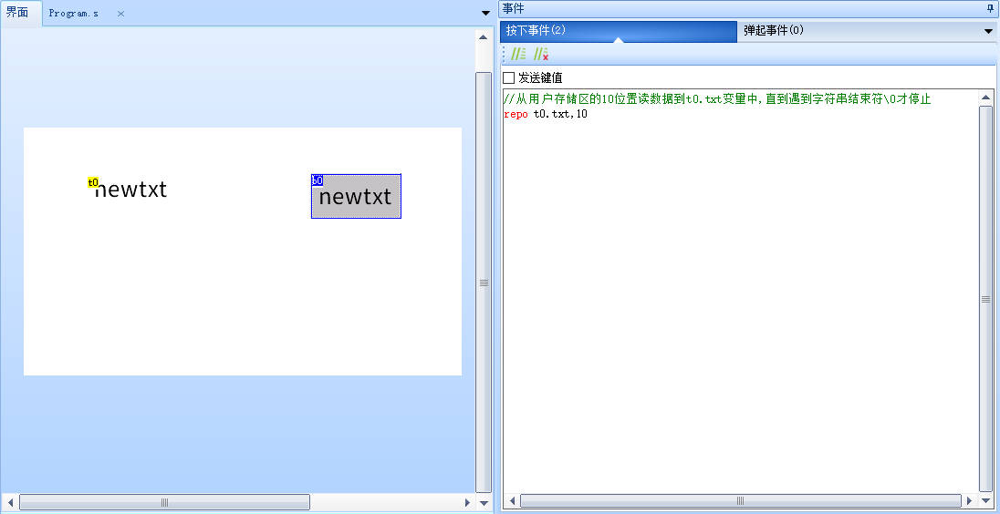
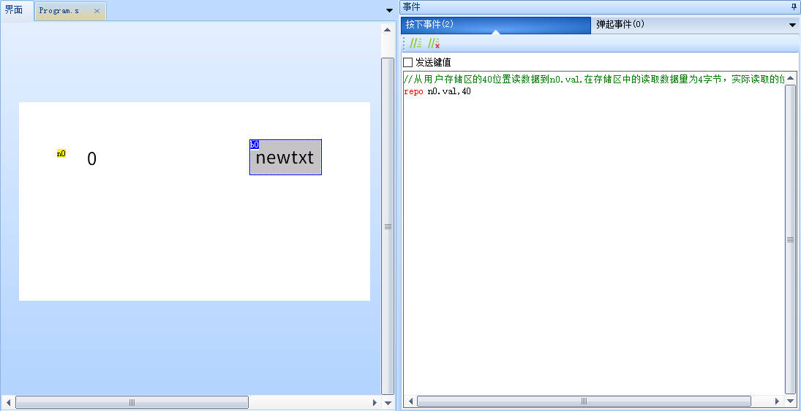

repo-从掉电存储空间读取数据
(仅k0系列/x系列支持)
注意
第一次使用掉电存储空间前（新屏幕），必须对掉电存储空间进行初始化 如何对掉电存储空间进行初始化
未初始化的掉电存储空间里面有什么数据是不确定的，如果未初始化就直接读取，可能会导致程序运行出错，例如会导致模拟器中的效果与串口屏实物的效果不一致
读取不消耗掉电存储空间寿命
存储空间的读写范围是0-1023,当读写的是val属性时,最后一个读写的位置是1020,因为当读写1020时,其读写范围是1020-1023。
repo att,add
att:目标变量
add: 用户存储区位置(从0开始)
repo-示例1
//从用户存储区的10位置读数据到t0.txt变量中,直到遇到字符串结束符\0才停止
repo t0.txt,10

注意
读取到txt属性时遇到字符串结束符0才停止，因此之前通过wepo或者wept写入字符串类型的变量时，一定要留有空间存储0,否则读取时就会出错
repo-示例2
//从用户存储区的40位置读数据到n0.val,在存储区中的读取数据量为4字节，实际读取的位置为10-13
repo n0.val,40

注意
读入内容为变量字符串的时候，在储存区中的读取数据量为此变量的最大字符数+1。
读入内容为变量数值时候，在储存区中的读取数据量统一为4字节。
使用用户存储区读写操作过程中请切记规划好数据区位置，以免位置交错引起数据覆盖错乱。
用户存储区大小为1k，位置为0-1023
repo-应用实例
读取多个连续的val属性
//实际读取40-43
repo n0.val,40
//实际读取44-47
repo n1.val,44
//实际读取48-51
repo n2.val,48
//实际读取52-55
repo n3.val,52
使用名称组读取n0-n9多个连续的val属性,请确保n0-n9的id号是连续的
eepAddr.val=40
for(sys0=n0.id;sys0<=n9.id;sys0++)
{
repo b[sys0].val,eepAddr.val
eepAddr.val+=4
}
读取多个txt属性
//从40地址开始读取，直到读取到 \0 ,才会停止读取
repo t0.txt,40
//从51地址开始读取，直到读取到 \0 ,才会停止读取
repo t1.txt,51
//从62地址开始读取，直到读取到 \0 ,才会停止读取
repo t2.txt,62
//从73地址开始读取，直到读取到 \0 ,才会停止读取
repo t3.txt,73
注意
怎么写进去的数据就怎么读出来，以字符串方式写进去的数据，就要读取到字符串属性中，以数值类型写进去的数据，就要读取到数值类型属性中
repo指令-样例工程下载
演示工程下载链接：